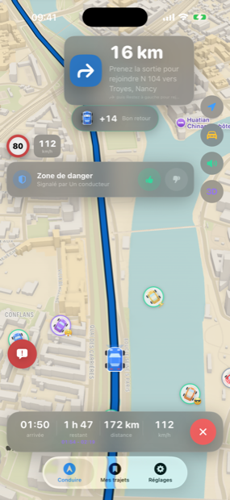

What you must have bought before the border
Europe charges for its motorways in three different ways. In eight countries, driving on one without having bought anything is an offence from the slip road on. WayCar tells you before you get there.
First of all
Regimes, prices and validity periods change: a country moves from a windscreen sticker to an electronic vignette, another opens a tolled section, a third revises its prices on 1 January. What you read here is what WayCar carries, reviewed in 2026, and it is a budgeting estimate, not an official tariff.
The signage at the roadside and the operator’s own site are what count. Where the app and the sign disagree, believe the sign.
The three regimes
| Regime | How you pay | What WayCar does with it |
|---|---|---|
| Vignette | A flat fee for a period, bought before joining the motorway. The price has nothing to do with distance. | Announced per country with its price, counted once even if the route enters the country twice. |
| Usage-based toll | Per kilometre driven, collected at a barrier or a gantry. | Estimated by applying the country’s average rate to roughly three quarters of the kilometres driven there, and only if the route has tolls at all. |
| Nothing for a car | The motorway network is not charged to a light vehicle. | Counted at zero. Which does not mean no individual structure is charged — see the caution below. |
Vignette required
In these countries the motorway cannot legally be used without buying something first. Depending on the country that is a windscreen sticker or an electronic vignette tied to the number plate — check the form; the obligation is the same either way. The price shown is for the shortest product a visitor can buy, as WayCar budgets it.
- CH Switzerland Vignette · about €42 · 1 year Switzerland sells no short vignette: even for a single crossing it is the annual one. WayCar budgets it in full, because that is what you will pay. It also tells you that warning a driver about a speed check is prohibited here, and that it will report none.
- AT Austria Vignette · about €12.40 · 10 days Announced before the border. WayCar also raises the Winterreifenpflicht: from 1 November to 15 April, winter equipment is required whenever the road is wintry.
- CZ Czechia Vignette · about €11 · 10 days Vignette announced, plus the local winter rule (zimní pneumatiky, 1 November – 31 March, when the road is wintry).
- SK Slovakia Vignette · about €12 · 10 days Vignette announced, plus zimné pneumatiky from 15 November to 31 March when the road is wintry.
- SI Slovenia Vignette · about €16 · 7 days Vignette announced. WayCar also flags that winter equipment (zimska oprema) is mandatory for everyone from 15 November to 15 March, whatever the state of the road.
- HU Hungary Vignette · about €14 · 10 days Announced before the border, with its price, once per crossing of the country.
- RO Romania Vignette · about €3.30 · 10 days The cheapest in Europe, and the one most often forgotten. WayCar names it anyway: the fine is not symbolic.
- BG Bulgaria Vignette · about €8 · 7 days Announced before the border with its price and its validity.
Usage-based tolls
Here you pay for what you drive. WayCar does not hold a section-by-section tariff — Apple says whether a route is tolled, never which kilometres are — so it applies the country’s published average rate to roughly three quarters of the distance driven there, and shows the result as an estimate. If the chosen route has no tolls, the country costs nothing.
- France The free trunk network is extensive: “avoid tolls” genuinely changes the price here, and WayCar prices the difference. It is also the country of the danger zone — see below.
- Italy Toll announced. WayCar also names Milan’s daily charge and Rome’s age-based restriction, and raises the obbligo pneumatici invernali between 15 November and 15 April in designated areas.
- Spain Estimated over the tolled sections of the route. Madrid and Barcelona are announced for their age-based access restriction.
- Portugal Estimated the same way. Lisbon is announced for its age-based restriction.
- Greece Announced as an estimate over the tolled sections.
- Croatia Announced as an estimate. No vignette: it is one of the countries people assume has one and does not.
- Poland Announced as an estimate over the tolled sections of the route.
- Ireland Announced as an estimate. Limits are posted in km/h here, unlike across the water.
- Norway Announced as an estimate. Collection is largely automated: WayCar gives you a budget, it does not manage any tag or account.
Nothing to pay for a car
In these countries WayCar prices the motorway network at zero for a light vehicle, and that is what makes a long European estimate credible at all: applying a French rate to Germany throws everything out.
- DEGermanyFree for a carNo toll, but two warnings: the Umweltplakette is required in the environmental zones of Berlin, Munich, Stuttgart, Cologne, Frankfurt and Hamburg; and warning a driver about a speed check is prohibited — WayCar will report none, and says so as you cross.
- NLNetherlandsFree for a carAmsterdam and Rotterdam are announced for their age-based restriction. A 100 km/h motorway limit, the lowest on this list.
- BEBelgiumFree for a carBrussels and Antwerp are announced for their age-based restriction.
- LULuxembourgFree for a carA winter rule with no dates: winter tyres are required the moment the road is wintry, whatever the calendar says.
- DKDenmarkFree for a carNetwork priced at zero.
- SESwedenFree for a carNetwork priced at zero, with the vinterdäck rule from 1 December to 31 March when the road is wintry.
- FIFinlandFree for a carNetwork priced at zero, talvirenkaat rule from 1 November to 31 March when the road is wintry.
- GBUnited KingdomFree for a carNetwork priced at zero, but London is announced for its daily charge. WayCar also shows speeds in miles per hour here, because that is what the signs say.
- EEEstoniaFree for a carWinter equipment mandatory for everyone from 1 December to 1 March.
- LVLatviaFree for a carWinter equipment mandatory for everyone from 1 December to 1 March.
- LTLithuaniaFree for a carNetwork priced at zero.
- ISIcelandFree for a carNetwork priced at zero.
Free means the motorway network is not charged to a car. It does not mean no individual structure is. Bridges, tunnels and crossings are charged in several of these countries, and WayCar does not price them — it does not know their tariffs. Carry a means of paying on the spot.
A country absent from all three lists produces no claim at all: WayCar prices it at zero and says nothing about it, rather than guessing.
Low-emission zones
This is the European rule that catches a visiting driver hardest. Paris fines a car without a Crit’Air sticker; a German Umweltzone does the same for a missing Umweltplakette; London charges by the day and bills the number plate. None of it is signposted in a language most visitors read.
What WayCar deliberately does not do is draw the zone boundaries. Approximating them would produce a confident “you are inside the zone” that is sometimes wrong, and being wrong about this costs the driver a fine. What is stated instead is verifiable: the route passes through a named city, that city has a scheme, and the scheme is named in its own language. Whether your particular vehicle is caught by it is for you to check.
| Scheme | Cities announced | Form |
|---|---|---|
| Crit’Air | Paris, Lyon, Grenoble, Marseille, Strasbourg, Toulouse | Windscreen sticker, bought in advance |
| Umweltplakette | Berlin, Munich, Stuttgart, Cologne, Frankfurt, Hamburg | Windscreen sticker, bought in advance |
| Daily charge | London, Milan | Paid per day of driving inside it |
| Age-based restriction | Rome, Madrid, Barcelona, Brussels, Antwerp, Amsterdam, Rotterdam, Lisbon, Vienna | Older vehicles simply cannot enter |
A battery-electric car is exempt from very nearly all of these, and WayCar takes that into account before warning you.
Winter equipment
The obligation that catches people out in December and appears on no sat-nav’s route card. A French driver heading into the Alps between 1 November and 31 March must carry chains or run winter tyres in every commune the prefect has designated — and finds out at a gendarmerie checkpoint on the way up.
As with low-emission zones, no boundary is drawn: deciding that your route enters one of those designated communes would need commune boundaries the app does not have, and being wrong means either a fine or chains bought for nothing. So WayCar states the published rule of the country you are crossing, with its dates and its local name — the name that will be written on the sign you are looking at.
| How binding | What it means | Countries |
|---|---|---|
| For everyone | Mandatory between the dates, whatever the road is like. | Slovenia, Estonia, Latvia |
| When the road is wintry | Mandatory as soon as there is snow, ice or slush. Germany has no dates at all: the rule bites the day the road is icy. | Germany, Austria, Czechia, Slovakia, Luxembourg, Sweden, Finland |
| In designated areas | Mandatory only where a local authority has decided it and signposted it. | France (loi Montagne II), Italy |
Speed checks, country by country
This is the one place in the application where the law, not the product, decides what is on screen.
Germany and Switzerland: nothing. Warning a driver about a speed check is prohibited — StVO §23 (1c) in Germany, Art. 57b SVG in Switzerland. Not a zone, not a quieter warning: nothing, while you are driving. WayCar neither draws nor announces any check in those two countries.
France: a danger zone, never a position. Signalling the exact spot has been forbidden since the arrêté of 3 January 2012. WayCar shows an aggregated zone of the legal length — 4 km on a motorway, 2 km on rural roads, 300 m in town — whose centre is snapped to a fixed grid, so every report inside one cell yields exactly the same zone. The position is not blurred, it is destroyed.
Elsewhere in Europe: at the reported spot. Italy, Spain, Portugal, Belgium, the Netherlands, Luxembourg, Austria, Poland, Czechia, Slovakia, Hungary, Slovenia, Croatia, Romania, Bulgaria, Greece, Denmark, Sweden, Norway, Finland, Ireland, the United Kingdom, Estonia, Latvia and Lithuania.
A country WayCar does not know falls back to the danger zone, never to the exact position: being vaguer than the law requires costs a driver very little, being more precise than it allows is an offence.
And above all, WayCar says out loud when the rule changes. A driver warned three times between Lyon and Mulhouse crosses at Basel and is never warned again: the app has not broken, Swiss law forbids it, and nothing on screen tells those two apart. As you cross, WayCar states the rule of the country you are entering. That sentence names no check, no road and no position: it is the line a German sat-nav puts on its own settings screen, said at the moment it starts to matter.
Reporting is not warning: a driver in Germany may still tell others what they saw. What the law forbids is the app warning them.

Speed limits
Apple publishes no speed limit for a road, and inventing one would be worse than saying nothing: a number shown next to your speedometer is read as authoritative. So WayCar states what is verifiable — the statutory limits of the country — and warns only when you are certainly above the highest of them, whatever road you are on.
That matters most exactly where a European driver is most likely to be caught out: crossing a border. France allows 130 on a motorway, Belgium 120, Switzerland 120, the Netherlands 100, and the UK posts everything in miles per hour. As you cross, WayCar announces the maxima of the country you are entering.